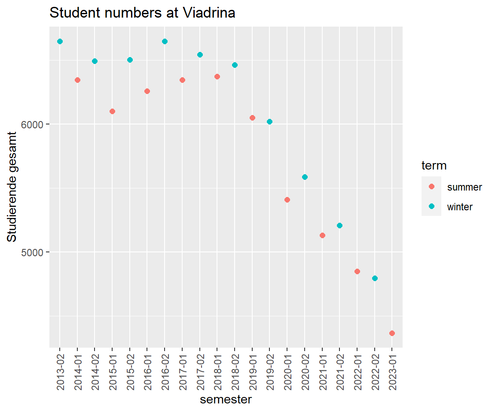
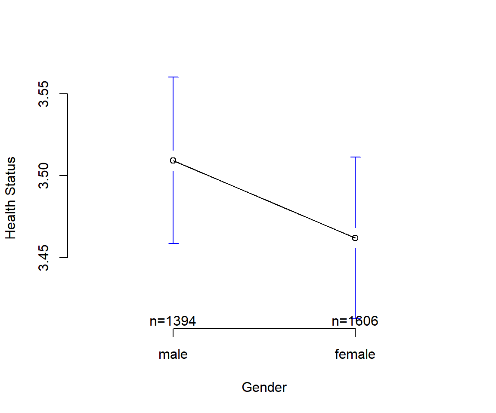

Chapter 6 Data Scraping
“Over the last two years alone, 90 percent of the data in the world was generated.”
Data scraping is a technique where a computer program extracts data from human-readable output coming from another program. Data scraping often takes place in web scraping (also known as crawling or spidering). In this process, an application is used to extract valuable information from a website. PDF scraping or more general report mining is the extraction of data from human-readable computer reports.
Consider alternatives before start scraping data:
- Look for a download button.
- Search same or similar data somewhere else.
- Check if there is an API.
- Ask the website owner for the data.
6.1 Student numbers are on the decline
Did you notice less and less fellow students sitting next to you? We analyse enrollment numbers of Viadrina European University. Dezernat 1 administers and publishes student statistics. There is an overview page where they provide some time series data (overall student numbers from 1992 to 2020) and the number of study programs (between 1992 to 2014).
Information is presented in two ways, as tables in PDF, e.g. the time series on total student numbers:12
And as tables in HTML. For each semester there is summary information on the webpage (and more comprehensive data in PDF), like for summer term 2022:
Let’s investigate the student numbers.
6.1.1 PDF scraping
Apply a programmatic way to download a PDF Use the built in download.file() function and specify an url and a destination and file name.
# Set URL for PDF
url <- "https://www.europa-uni.de/de/struktur/verwaltung/dezernat_1/statistiken/Entwicklung-der-Gesamtstudierendenzahl.pdf"
# Specify destination where file should be saved (and name)
destfile <- "data/Viadrina/Gesamtstudierendenzahl.pdf"
# Apply download.file function in R
download.file(url, destfile, mode = "wb")To extract a table from a PDF we use the pdftables package.13 The package is a wrapper for the PDFTables API. It requires an API key from https://pdftables.com/. You can register and get one for free. The result is stored as .csv file.
An application programming interface (API) is a way for two or more computer programs to communicate with each other. It is a type of software interface, offering a service to other pieces of software.
Be careful with your API keys. If you only use a file locally on your computer, you might be fine. Don’t share this file. Don’t upload it. If you upload an API key on GIT, you get a notifcation mail from https://www.gitguardian.com/. Instead, put your API in your environment. This can be done by a .Renviron file. Use usethis::edit_r_environ(scope = "project") in order to acess and edit your information. Read more https://daattali.gitbooks.io/stat545-ubc-github-io/content/bit003_api-key-env-var.html https://resources.numbat.space/using-rprofile-and-renviron.html
https://github.com/expersso/pdftables
(Note: All functions in the package require that you provide your api key in the api_key argument. By default this looks for an environment variable called pdftable_api, but you can also provide it directly.) free 50 page
library(pdftables)
convert_pdf(input_file = destfile,
output_file = "data/Viadrina/viadrina_students.csv",
api_key = "YOUR_KEY")Scraped data often requires a lot of cleaning.
library(tidyverse)
# read csv file
viadrina_1992_2020_before <- read.csv("data/Viadrina/viadrina_students.csv", header = TRUE)
viadrina_1992_2020 <- viadrina_1992_2020_before
# replace header names by first row
names(viadrina_1992_2020) <- viadrina_1992_2020[1,]
# drop first row
viadrina_1992_2020 <- viadrina_1992_2020[-1,]
# drop last row
viadrina_1992_2020 <- viadrina_1992_2020[-30,]
# remove all \n
colnames(viadrina_1992_2020) <- gsub("[\r\n]", "", colnames(viadrina_1992_2020))
# readable column names
colnames(viadrina_1992_2020) <- c("Year", "Total", "Female", "Female_Pct",
"German", "German_Pct", "Foreign", "Foreign_Pct",
"Pole", "Pole_Pct")
# remove percentage sign
viadrina_1992_2020 <- viadrina_1992_2020 %>%
mutate(across(everything(), ~ ifelse(str_detect(.x, "%"),
parse_number(.x) / 10,
.x)))
# convert all chr to numeric
viadrina_1992_2020 <- viadrina_1992_2020 %>% mutate_if(is.character,as.numeric)
glimpse(viadrina_1992_2020)
#> Rows: 29
#> Columns: 10
#> $ Year <dbl> 1992, 1993, 1994, 1995, 1996, 1997, 1998, 1999, 2000, 2001…
#> $ Total <dbl> 472, 997, 1443, 1810, 2321, 2835, 3132, 3451, 3802, 4170, …
#> $ Female <dbl> 236, 546, 724, 949, 1242, 1584, 1841, 2057, 2308, 2559, 20…
#> $ Female_Pct <dbl> 50.0, 54.8, 50.2, 52.4, 53.5, 55.9, 58.8, 59.6, 60.7, 61.4…
#> $ German <dbl> 325, 598, 841, 1030, 1348, 1662, 1824, 2048, 2226, 2393, 2…
#> $ German_Pct <dbl> 68.9, 60.0, 58.3, 56.9, 58.1, 58.6, 58.2, 59.3, 58.5, 57.4…
#> $ Foreign <dbl> 169, 399, 602, 780, 973, 1173, 1308, 1403, 1576, 1777, 193…
#> $ Foreign_Pct <dbl> 35.8, 40.0, 41.7, 43.1, 41.9, 41.4, 41.8, 40.7, 41.5, 42.6…
#> $ Pole <dbl> 167, 384, 566, 731, 883, 1053, 1179, 1247, 1364, 1440, 151…
#> $ Pole_Pct <dbl> 35.4, 38.5, 39.2, 40.4, 38.0, 37.1, 37.6, 36.1, 35.9, 34.5…Let’s look at the student numbers over time.
viadrina_1992_2020 %>%
ggplot(aes(x=Year)) +
geom_line(aes(y = Total, colour = "Total")) +
geom_line(aes(y = Female, colour = "Female")) +
labs(title = "Student numbers at Viadrina",
subtitle = "Share of female students")
Now how are the components made up.
viadrina_1992_2020 %>%
ggplot(aes(x=Year)) +
geom_col(aes(y = Total, fill = "Total")) +
geom_col(aes(y = German, fill = "German")) +
geom_col(aes(y = Foreign, fill = "Foreign")) +
labs(title = "Student numbers at Viadrina",
subtitle = "Share of foreign students")
6.1.2 Web scraping
To get more recent numbers, we rely on the webpage information. How can we access all semester data? Investigate the pattern of the URLs.
- https://www.europa-uni.de/de/struktur/verwaltung/dezernat_1/statistiken/2013-Wintersemester/index.html
- https://www.europa-uni.de/de/struktur/verwaltung/dezernat_1/statistiken/2014-Sommersemester/index.html
- https://www.europa-uni.de/de/struktur/verwaltung/dezernat_1/statistiken/2014-Wintersemester/index.html
- https://www.europa-uni.de/de/struktur/verwaltung/dezernat_1/statistiken/2015-Sommersemester/index.html
- https://www.europa-uni.de/de/struktur/verwaltung/dezernat_1/statistiken/2015-wintersemester/index.html
Usually the pattern is year hypen semester. Some winter semesters are capitalized, some are not. We use the rvest package to web scrape static html content. It always starts with reading in the html data. Then pipe and use html_table() to extract tabular information (lucky us, there is only one table).
library(rvest)
read_html("https://www.europa-uni.de/de/struktur/verwaltung/dezernat_1/statistiken/2013-Wintersemester/index.html") %>%
html_table()
#> [[1]]
#> # A tibble: 7 × 2
#> X1 X2
#> <chr> <int>
#> 1 Studierende gesamt 6645
#> 2 weiblich 4206
#> 3 männlich 2439
#> 4 Deutsche 5001
#> 5 Ausländer/innen 1644
#> 6 1. Fachsemester 1783
#> 7 1. Hochschulsemester 1110Now, we would like to do this for every subpage (semester) and combine the data in one table. Focus on the variable component in the URL and create a vector of all semesters.
# the manual way
winters <- seq(from=2013, to=2021)
summers <- seq(from=2014, to=2022)
winters <- paste0(winters, "-wintersemester")
summers <- paste0(summers, "-Sommersemester")
all_terms <- c(rbind(winters, summers))
all_terms[1] <- "2013-Wintersemester"
all_terms[3] <- "2014-Wintersemester"
# we can paste them together
all_url <- paste0("https://www.europa-uni.de/de/struktur/verwaltung/dezernat_1/statistiken/", all_terms, "/index.html")Create a for loop to repeat the rvest procedure for each element in the URL list.
A loop is a programming structure that repeats a sequence of instructions until a specific condition is met.
There are two more components. We initialize a list to store each iteration of the loop.
tables <- list()
index <- 1
for(i in 1:length(all_url)){
table <- all_url[i] %>%
read_html() %>%
html_table()
tables[index] <- table
index <- index + 1
}
df <- do.call("cbind", tables)More and more cleaning.
df[,c(seq(from=3, to=35 , by=2))] <- NULL
colnames(df) <- c("Variable", all_terms)
viadrina_2013_2022 <- as.data.frame(t(df))
# replace header names by first row
names(viadrina_2013_2022) <- viadrina_2013_2022[1,]
# drop first row
viadrina_2013_2022 <- viadrina_2013_2022[-1,]
# all chr to numeric
viadrina_2013_2022 <- viadrina_2013_2022 %>% mutate_if(is.character,as.numeric)
# round all numbers
viadrina_2013_2022 <- viadrina_2013_2022 %>% mutate_if(is.numeric, round)
# multiply some rows by 1000
viadrina_2013_2022[c(13,15,17),] <- viadrina_2013_2022[c(13,15,17),] %>%
mutate_all(.funs = funs(. * 1000))
# fix last column and divide by 1000
viadrina_2013_2022[c(13,15,17),7] <- viadrina_2013_2022[c(13,15,17),7]/1000
# create a semester variable
viadrina_2013_2022$year <- substr(all_terms, start = 1, stop = 4)
viadrina_2013_2022$term <- rep(c("winter", "summer"), 9)
viadrina_2013_2022$semester <- paste0(viadrina_2013_2022$year, rep(c("-02", "-01"), 9))
# row names
rownames(viadrina_2013_2022) <- 1:nrow(viadrina_2013_2022) Now we plot
viadrina_2013_2022 %>%
ggplot(aes(x=semester)) +
geom_point(aes(y = `Studierende gesamt`, fill = "Total")) +
geom_point(aes(y = `1. Fachsemester`, fill = "First years")) +
geom_point(aes(y = `1. Hochschulsemester`, fill = "First sem")) +
labs(title = "Student numbers at Viadrina",
subtitle = "Share of female students") +
theme(axis.text.x = element_text(angle = 90, vjust = 0.5, hjust=1))
Long term perspective
viadrina_2013_2022 %>%
ggplot(aes(x=semester)) +
geom_point(aes(y = `Studierende gesamt`, fill = "Total")) +
geom_point(aes(y = `1. Fachsemester`, fill = "First years")) +
geom_point(aes(y = `1. Hochschulsemester`, fill = "First sem")) +
labs(title = "Student numbers at Viadrina",
subtitle = "Share of female students") +
theme(axis.text.x = element_text(angle = 90, vjust = 0.5, hjust=1))
rbind(viadrina_1992_2020, c(2021, viadrina_2013_2022$`Studierende gesamt`[17]
))
viadrina_1992_2020 %>%
ggplot(aes(x=Year)) +
geom_col(aes(y = Total, fill = "Total")) +
geom_col(aes(y = Female, fill = "Female")) +
labs(title = "Student numbers at Viadrina",
subtitle = "Share of female students")Get the PDF https://www.europa-uni.de/de/struktur/verwaltung/dezernat_1/statistiken/Entwicklung-der-Gesamtstudierendenzahl.pdf↩︎
You may use other free services. Search for Online converter PDF to csv/xlsx↩︎